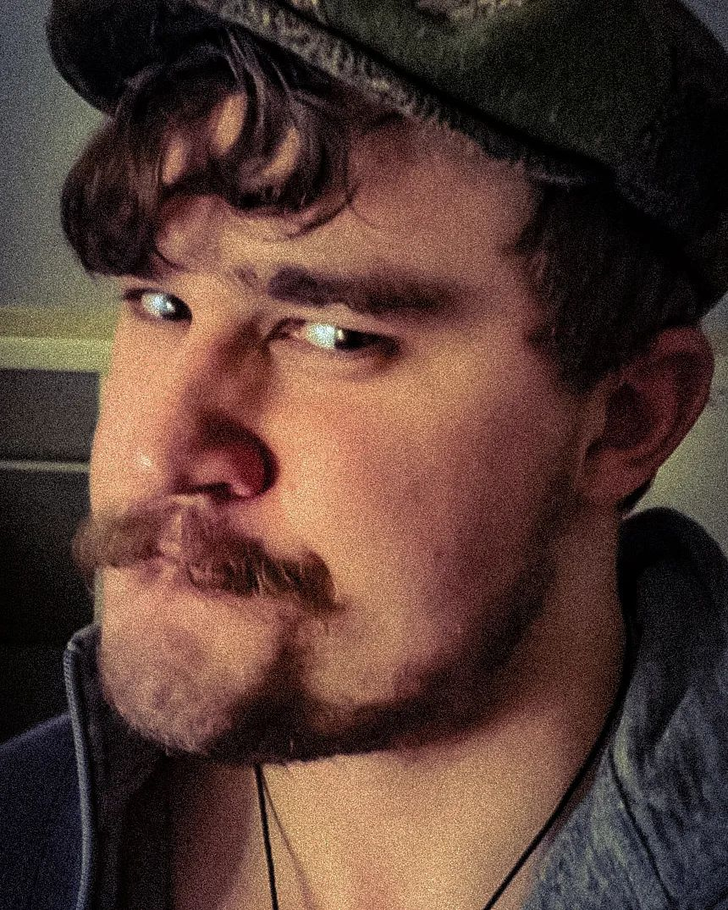
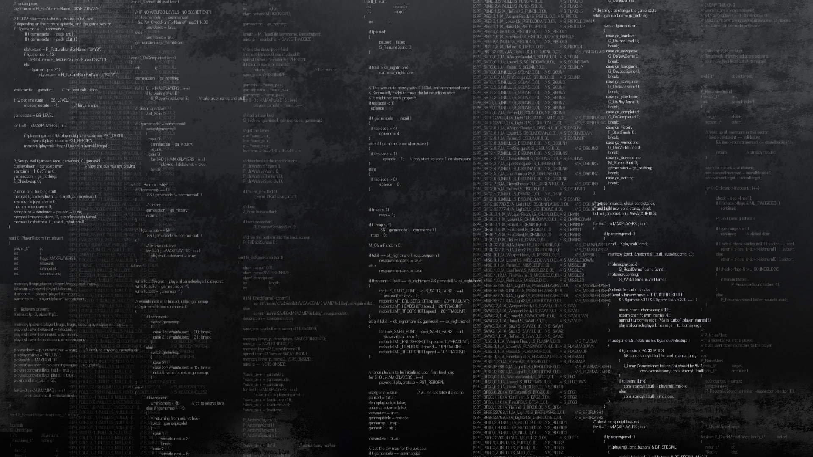
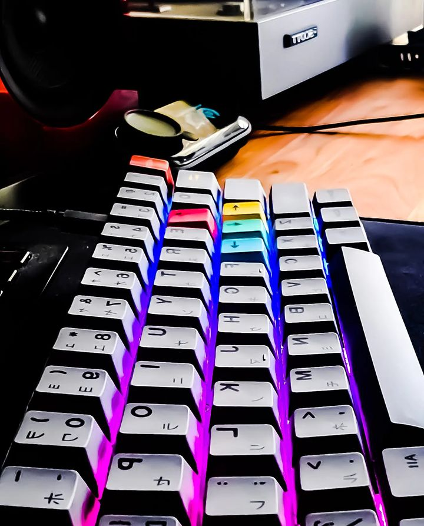
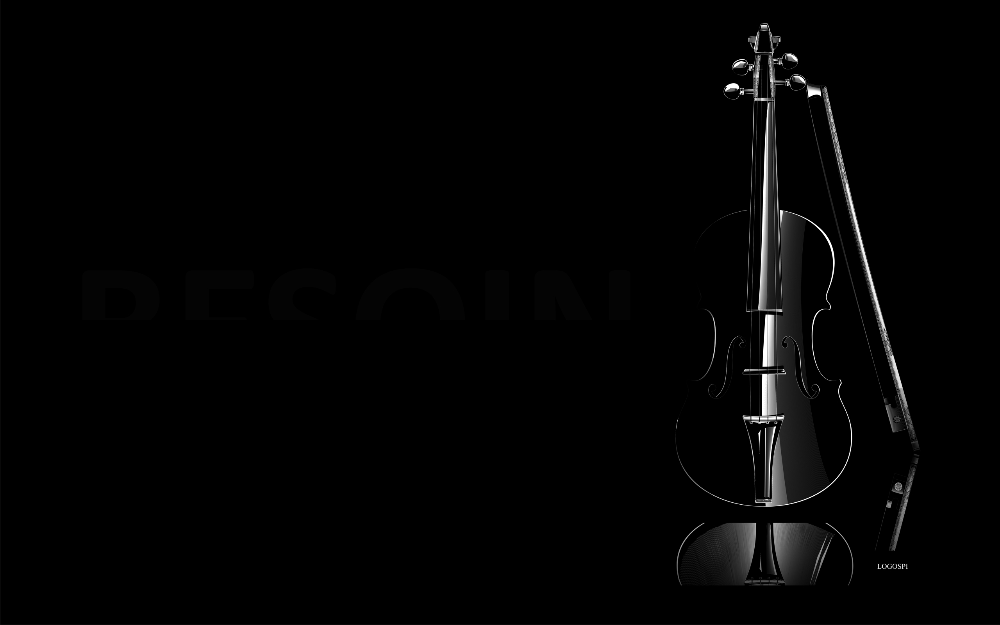
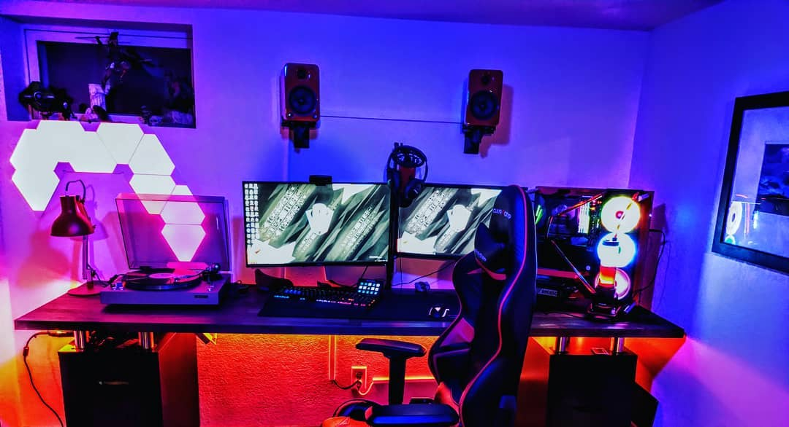

Intro

Hi, my name is John O'Donnell. I am a software engineer with a unique background that has shaped my career journey. I began my professional life as an EOD technician in the Air Force, where I gained invaluable experience in handling complex situations, working under pressure, and ensuring the safety of others. Throughout my time in the military, I had the privilege of closely supporting politicians and neutralizing potential threats, honing my skills in problem-solving and critical thinking.
After fulfilling my initial contract, I was granted an extension for one more year. During this time, I took a step back and reflected on my future. While I enjoyed my experiences as an EOD technician, I realized the importance of pursuing a long-lasting career would become vital as EOD is not a long-term career option.
I dedicated several months to researching various career paths and eventually discovered my passion for the tech industry. I decided to enroll in App Academy, where I delved into programming languages such as JavaScript and Python. During my time there, I developed a range of impressive projects, including a meetup clone, a Stack Overflow-like application, and a review app for breweries. These projects allowed me to acquire essential skill to become a full stack engineer.
Skills
Javascript
Python
Rust
Node.js
React.js
Flask
Git
Redux
SQLalchemy
Postgres
MySQL
Bio

I am a skilled and passionate software engineer with experience in Rust, Python, and JavaScript. With a background as an Explosive Ordnance Disposal (EOD) technician, I bring a unique perspective and problem-solving approach to the world of software development. I excel at analyzing complex systems and designing robust, efficient solutions.
Technical Skills:
Programming Languages: Rust, Python, JavaScript
Frameworks/Libraries: Node, React, Sequelize, SQLalchemy, Flask, Alembic, Diesel, Rocket, CORS
Background:
Before transitioning to software engineering, I served as an EOD technician in the Air Force, handling and disposing of hazardous explosive materials. This experience instilled in me a deep sense of attention to detail, discipline, and the ability to remain calm under pressure. These skills seamlessly translate into my work as a software engineer, where I meticulously craft clean and maintainable code, ensuring reliable and secure software solutions.
Passions and Interests:
Beyond coding, I has a profound love for chess and the violin. I find solace and intellectual stimulation in the intricate moves of a chessboard and appreciate the harmony and emotion that can be expressed through playing the violin. These interests fuel my creative thinking and problem-solving abilities, which I channel into my work as a developer.
Current Endeavors:
Currently, I am actively engaged in projects that leverage my experience in Rust, Python, and JavaScript. I enjoy tackling challenging problems and are continuously expanding my knowledge and skills to stay at the forefront of the ever-evolving software development landscape.
I thrive in collaborative environments and value effective communication and teamwork. I am always eager to contribute my expertise, share knowledge, and learn from others.
Environment

Os - Fedora 38 Workstation. I have also been known to use Ubuntu on WSL with windows 11
Editor - VSCode
Version Control - Git
Follow My Setup Guide
Hardware

PC - Ryzen 3700x, 16GB TridentZ, 2080 Super
Monitor - Samsung Ultrawide
Mouse - Original Finalmouse & Glorious model O-
Keyboard - Custom GMMK 60% with hand-lubed Gateron black ink switches and PBT keykaps
Microphone - Blue Yeti Pro
Headphones - JBL
Violin

I have played the violin since I was 5 years old. As of more recently I have not done so as much as in the past. My violin is an early German reproduction of an Antonio Amati that has been in the family for five generations. I have studied under the likes of Rudy Perrault and Joshua Bell. My favorite composers are Brahms, Paganini and Mendelssohn.
Chess
I am an avid enjoyer of chess. I played it as a child with my dad and play monthly with my grandfather. I built an end table with an inlaid chess board made of cherry wood and white oak. I use a Staunton tournament set to play. I do play on chess.com, however I am currently working on improving my rating.
EOD
During my time as an EOD technician, I completed approximately fifty VIPPSA missions(secret service protection) where I worked on the protective details of Joe Biden, Donald Trump, Mike Pence, Barrack Obama and George W. Bush. I trained closely with Army Special Forces and Navy seals and attended many "cool guy" courses. I did several range clearance misssions and cleared over ten thousand hazardous ordnance. During covid, I gathered data on infection rates for the state of Minnesota and headed a team supporting the covid response. I met with state-level politicians to bolster awareness of response capabilities and worked closely with local law enforcement to remove military munitions from civilian areas. I did alot of volunteering with Civil Air Patrol, the Boys and Girls club, and Starbase USA. I also was instrumental in saving the Air Force several million dollars through management/repair of equipment and the management of office safety programs. I exited the Air Force as a Staff Sergeant.
Gaming

I enjoy gaming. I got my start with Legend of Zelda: Link to the past on SNES. I enjoyed mario games on gamecube, and Pokemon on the Gameboy. I got a gaming PC to play Counter-Strike after I graduated highschool. Siege released shortly after this time and I started playing that. I ended up playing in college leagues such as CEAA and CR6. This led to me playing in Go4, faceIt, Challenger League qualifiers and R6 Nationals. My best solo rank was Plat 2, always holding 1-2 games off of Plat 1. I got bored of FPS games and started playing survival games. I got big into Ark: Survival Evolved and played in TPG on Island2. I went innactive as the game started to die and now I mostly enjoy Souls games.
.png)
.png)